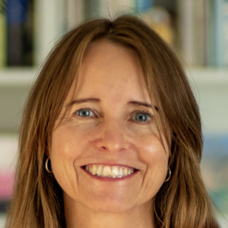
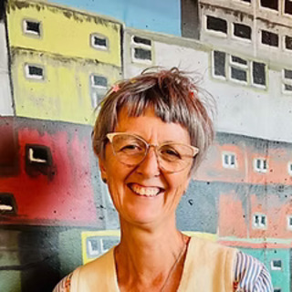

Feedback brief · 7 July 2026
We are developing a concept for an independent Policy Colab for Aotearoa New Zealand — and sharing this brief to gather early feedback from a small number of people whose perspectives we trust.
Aotearoa New Zealand faces complex, long-term policy challenges that do not fit neatly within electoral cycles or party platforms.
What is missing is a space where expert knowledge and diverse political perspectives can be brought together honestly, with excellent facilitation. A space to develop policy advice equal to the future we could choose. Where Aotearoa stands today is the result of choices; where we go next is ours to make.
An independent initiative that would develop robust, multi-partisan policy advice on issues of national significance — starting with one or two programmes of work, and growing into a permanent institution if it proves its worth.
The Colab would work thematically: for each policy area, it brings together a diverse group of experts from across the political spectrum, facilitated through a structured deliberative process, to develop policy options grounded in evidence and honest about trade-offs.
Each output would separate shared foundations — what the evidence shows, and where experts across the spectrum genuinely agree — from genuine choices, where values diverge. And rather than hiding the divergence, the outputs would make explicit the values and worldviews that underpin each pathway, so decision-makers can see not just the options but why thoughtful people land in different places.
The outputs are designed to be used — by policymakers, political parties, civil society organisations, journalists, and engaged citizens. Anyone who wants to see Aotearoa performing at its potential.
And the briefs are not the only output: each programme also builds a lasting network of people who have thought deeply together across difference — a community of practice that becomes, over time, an asset in its own right.
Funders — including government — do not direct the Colab's work or conclusions. Hosted within an independent research institution, this independence is structural, not just a statement of intent.
Expert groups span the political spectrum. The goal is not lowest-common-denominator consensus but rigorous collective thinking across genuine difference.
The Colab treats AI as core infrastructure — used seriously where it adds rigour and reach (evidence synthesis, landscape mapping, audience-specific communication), and deliberately kept out of the deliberation 'room', where human judgement and trust are the point. A working framework sets out these boundaries and the reasoning behind them.
The Colab invests seriously in the relational infrastructure needed to hold robust discussion and collaboration across difference and complexity. In Aotearoa, te ao Māori teaches us that relationships are fundamental; they are the means through which everything is done. This understanding is central to the Colab's approach — relationships come first, and they need to be grown, scaffolded, and cared for, with intentional process. What matters is whether the people in the room trust, respect, and feel safe enough with each other to risk what multipartisanship actually requires of us — vulnerability rather than defendedness. A well-built relational container gives people the trust and the skills to disagree productively rather than either avoiding or weaponising disagreement. And the knowledge and perspectives of tangata whenua are central to policy that is fit for this place.
People arrive with different, largely unstated theories of how the world works. If those worldviews stay implicit, the same language can mean quite different things, and diverging positions can seem nonsensical. If they are made visible, the group gains two things: the ability to see a colleague's position as coherent within their worldview, even while disagreeing with it; and the possibility of everyone developing a more expansive cognitive architecture.
If this foundation is built well, it should result in a brief that both a centre-left and a centre-right government could pick up and recognise their own tradition inside — because the people who wrote it did the work of disagreeing honestly, holding the tensions while deeply listening to each other, and staying in relationship. The relational work is the source of the Colab's credibility.
We would welcome your response to:

Anne-Marie Brook is an economist and entrepreneur with experience across the government, corporate, and civic sectors in Aotearoa. She was previously a senior economist at the OECD and in the New Zealand public sector, and co-founded the Human Rights Measurement Initiative (HRMI). She is an Edmund Hillary Fellow and a student of many things including AI and healing-centred systems change.

Rebecca Sinclair is a facilitator, educator, and systems practitioner, and an Honorary Research Fellow at Toi Rauwhārangi, Massey University. Co-founder of The Pākehā Project, she has spent 27 years working at the intersection of relational facilitation, embodied practice, and restorative systems change — with a particular focus on surfacing the unstated worldviews and assumptions people bring into a room.